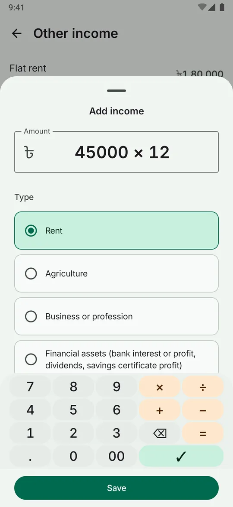
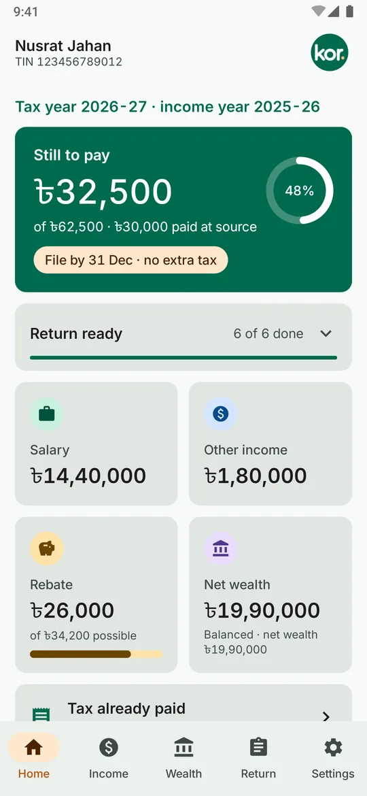
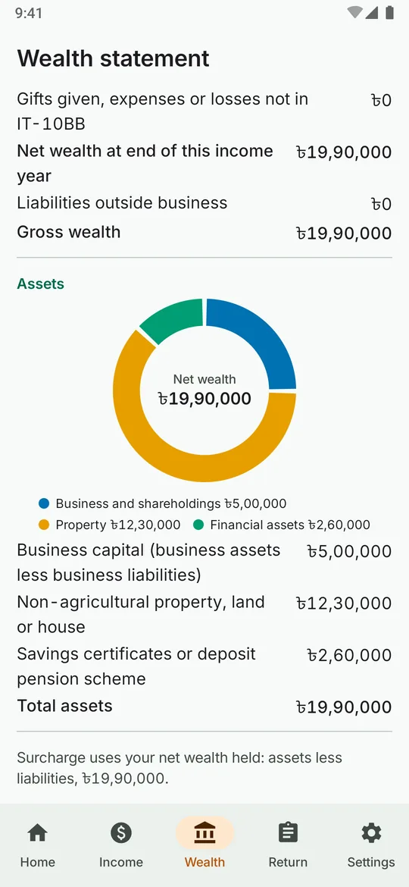
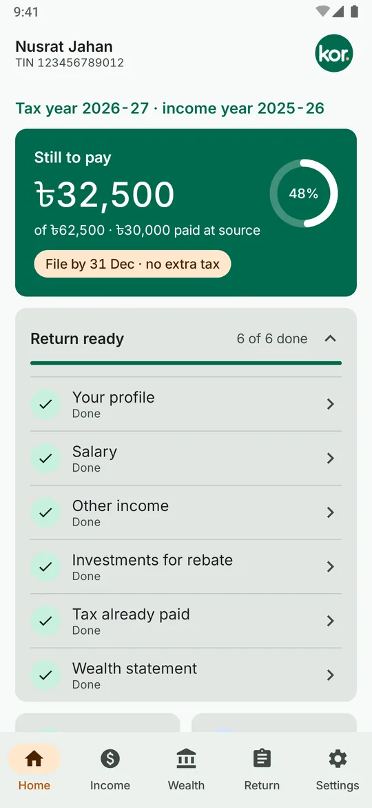
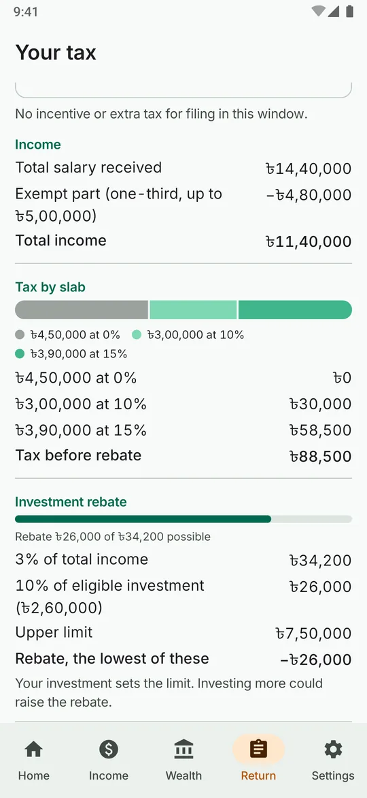
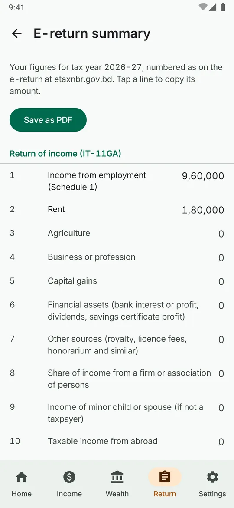

Tax worked out, step by step
Slab tax, investment rebate, minimum tax, the net-wealth surcharge and the filing incentive or extra tax, each line in whole taka as the e-return shows it.
Bangladesh personal income tax
Kor is a private Android app. Record income, investments and tax paid through the year. See what you owe, how much more you can invest for the rebate before 30 June, and get your wealth statement ready for the e-return.
Pre-alpha, for tax year 2026-27. There is no download yet: you can build the app from source on GitHub.



The home screen shows what you still owe, how much is already covered by tax deducted at source, and the filing deadline that applies to you, with a checklist of what is left to fill in.

Slab tax, investment rebate, minimum tax, the net-wealth surcharge and the filing incentive or extra tax, each line in whole taka as the e-return shows it.
While the income year is open, see how much more to invest by 30 June and exactly what it saves, stopping where minimum tax takes over.
IT-10B and IT-10BB in the e-return's layout, with the same reconciliation NBR applies. Kor tells you whether it balances and, if not, by how much and which way.
Every figure under its e-return line number. Tap a line to copy its amount, or save the whole summary as a PDF.
Type sums such as 45,000 × 12 on a built-in keypad with lakh grouping. Bangla digits show when the app is in Bangla.
A note before the early-filing incentive ends, before extra tax starts or goes up, and before 30 June for investments. Reminders never show an amount.


Screenshots from the app with made-up figures for a made-up taxpayer.
Kor has no internet permission, so it cannot send anything anywhere. Your figures are saved on the phone only, sealed with a key held in Android's Keystore.
Kor is pre-alpha. The rules for tax year 2026-27 (income 1 July 2025 to 30 June 2026, the return filed in late 2026) come from NBR's Income Tax Guide 2026-27, the Finance Act 2026 and the Income Tax Act 2023, and the tests reproduce the guide's worked examples.